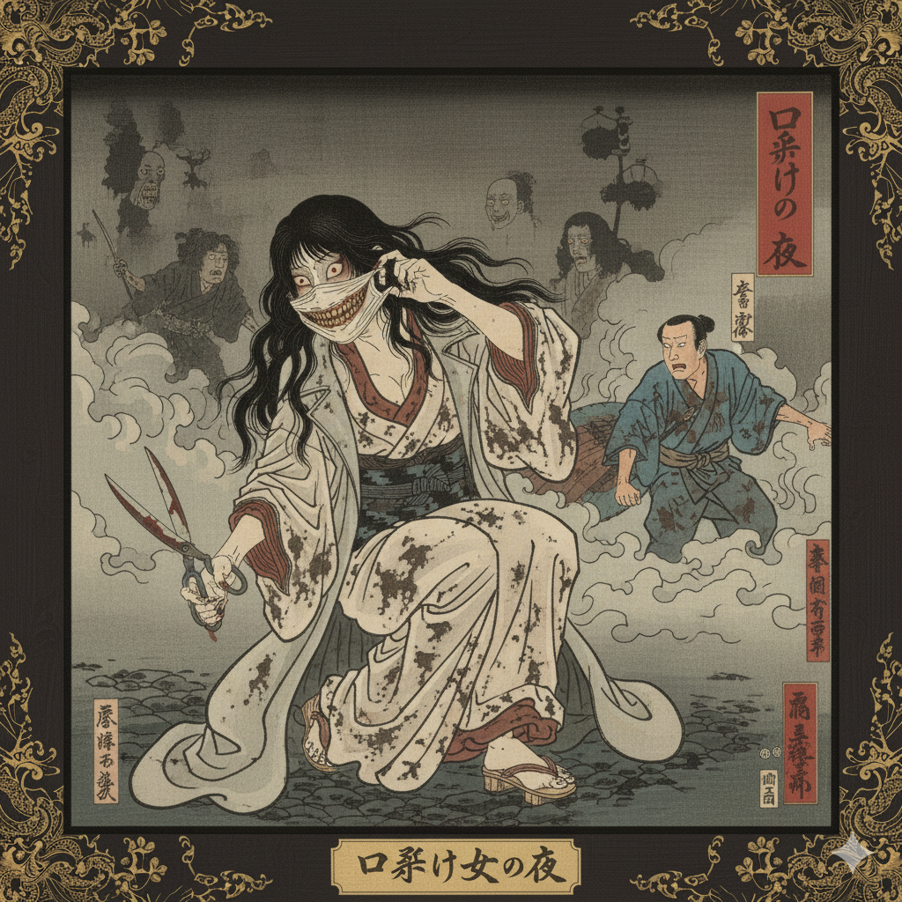
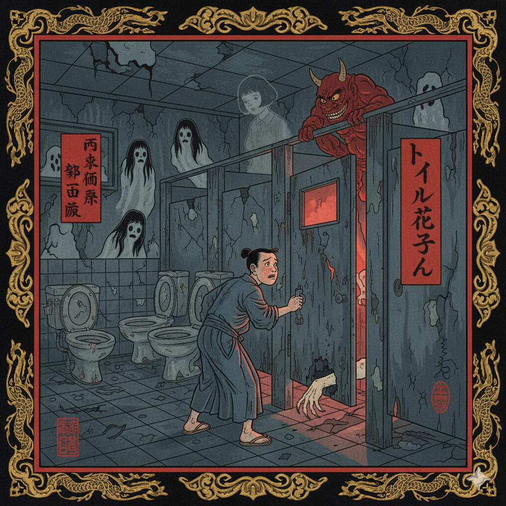
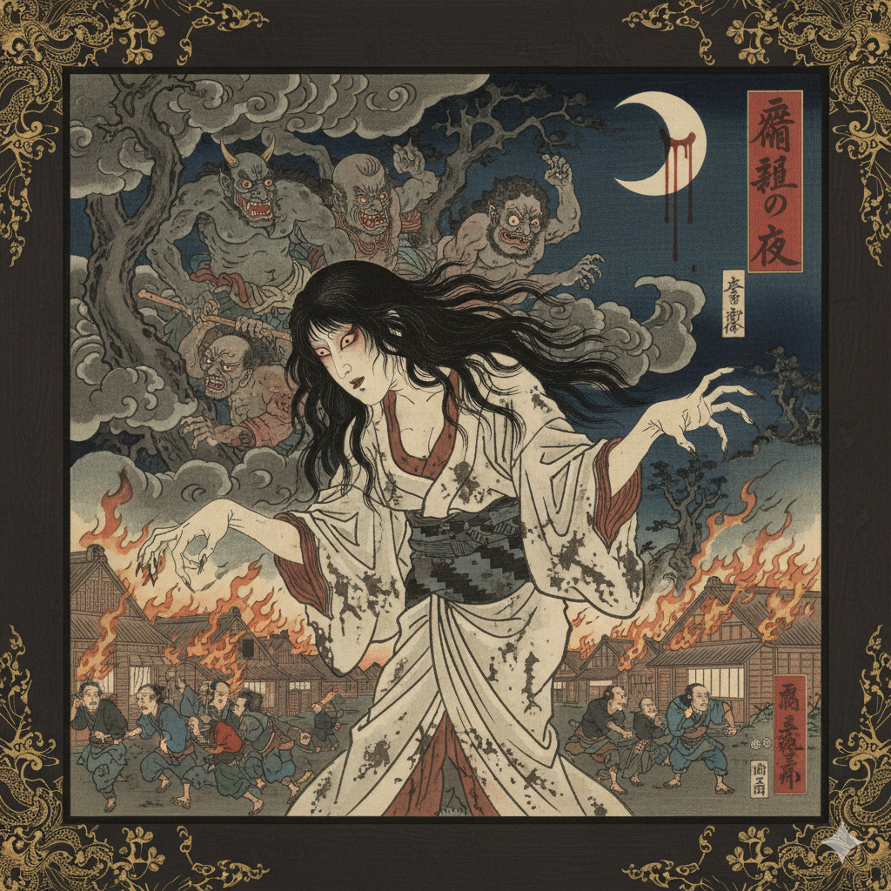
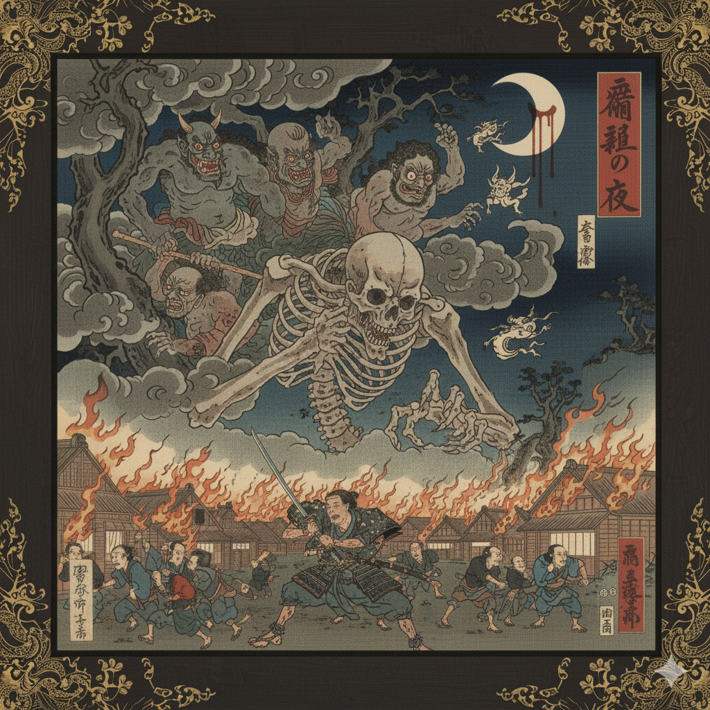
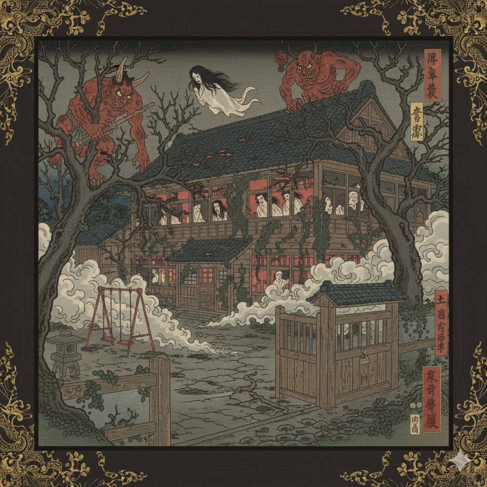
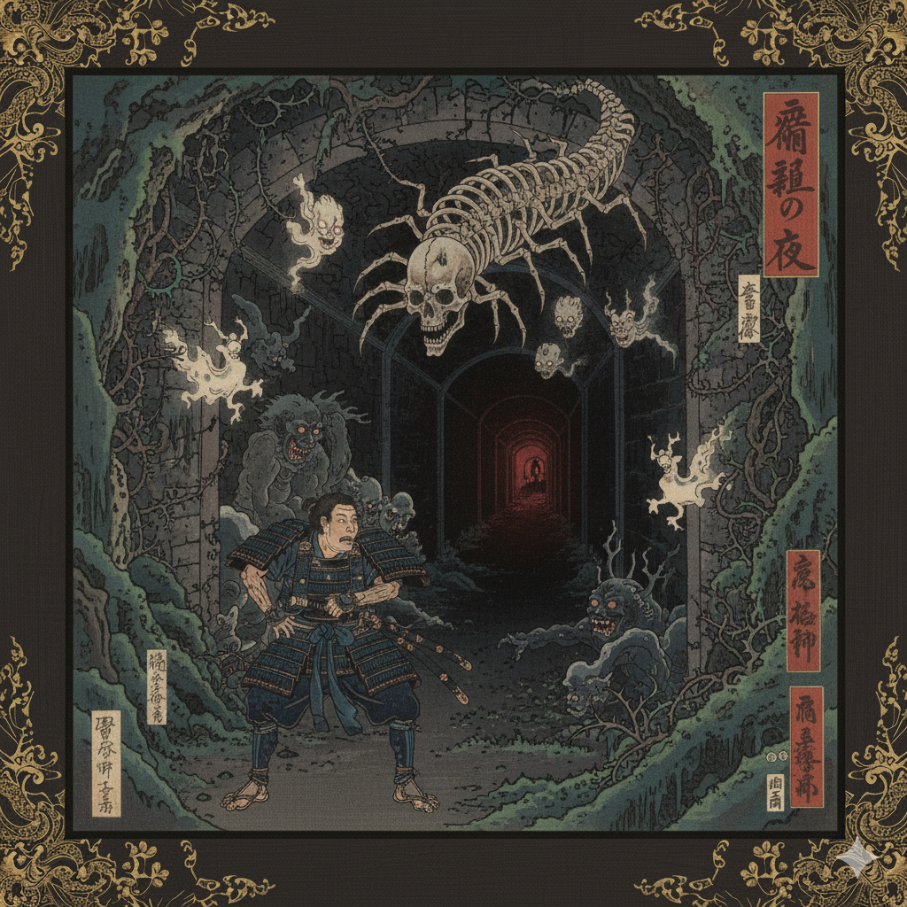
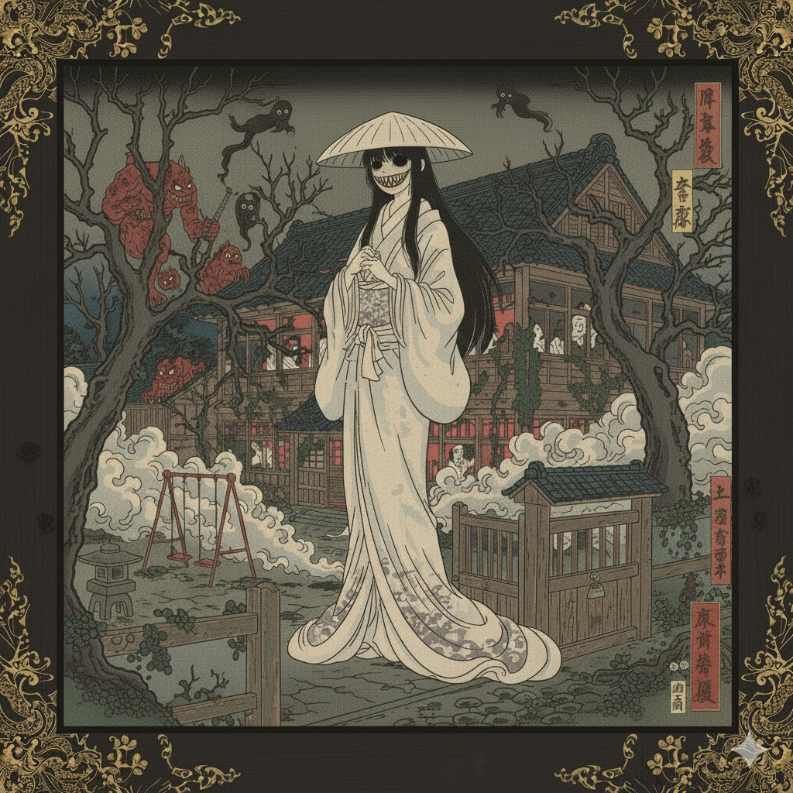
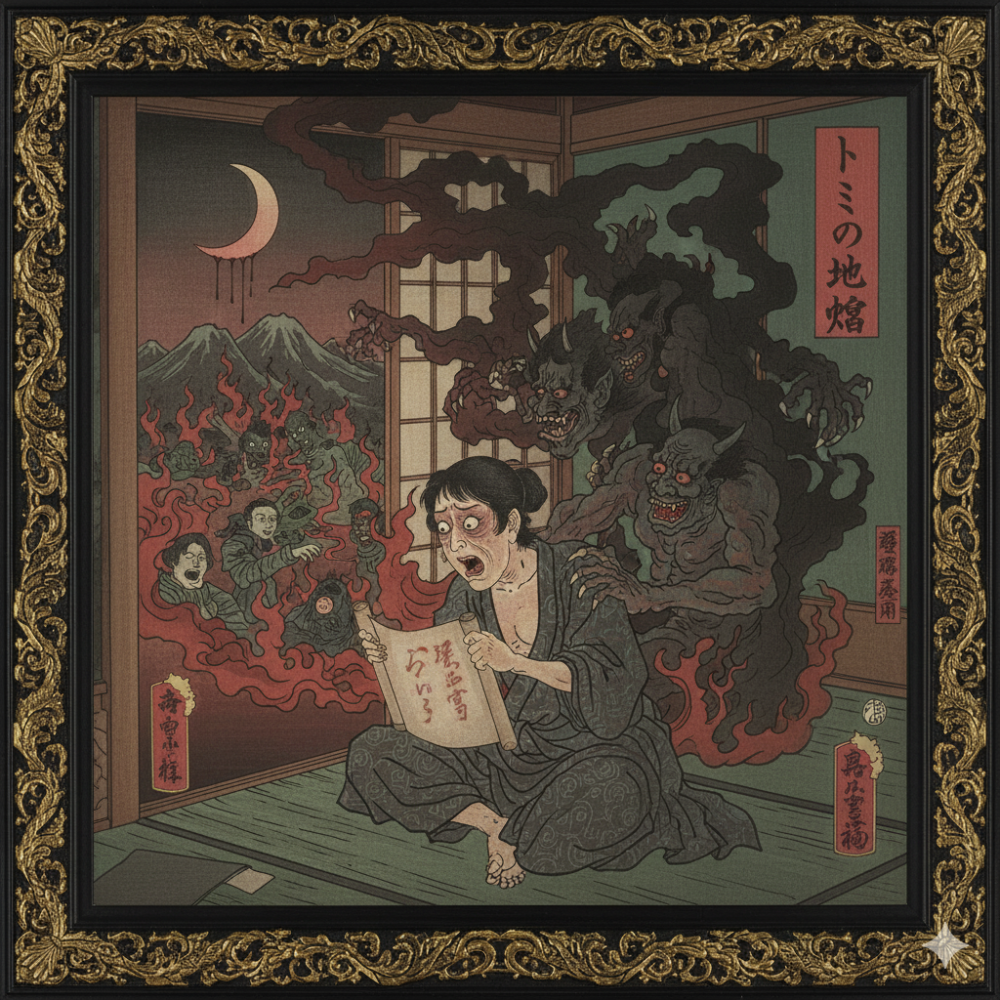
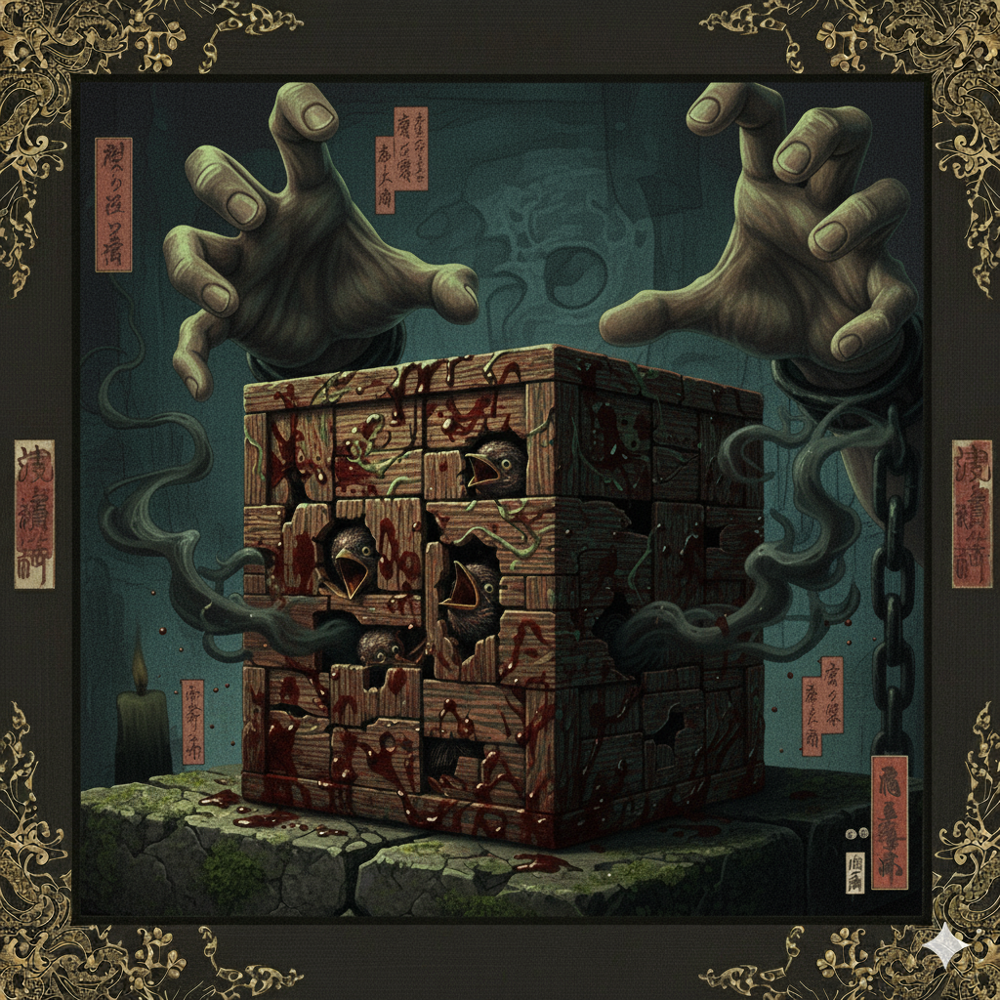
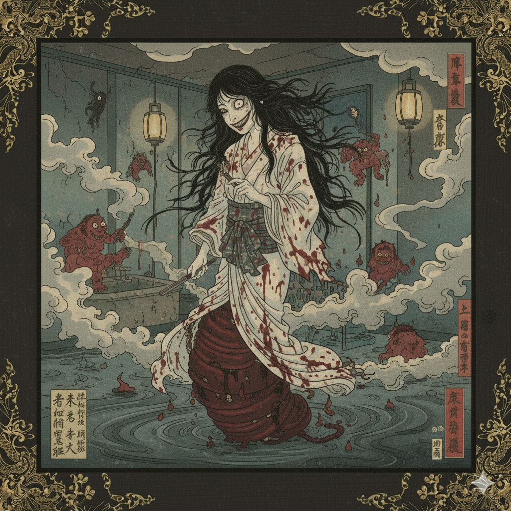

❮ Voltar para Lendas
Kuchisake-onna

A "Mulher da Boca Cortada" é talvez a lenda urbana mais infame do Japão moderno. Embora algumas versões tracem sua origem ao período Heian (como a esposa vaidosa de um samurai que a mutilou por infidelidade), a lenda como a conhecemos explodiu em 1979, causando pânico real em Nagasaki e em todo o país, a ponto de a polícia aumentar as patrulhas para proteger crianças que voltavam da escola.
A lenda descreve um espírito vingativo (Onryō) de uma mulher que esconde seu rosto desfigurado atrás de uma máscara cirúrgica, algo comum no Japão. Ela aborda suas vítimas, geralmente crianças ou estudantes solitários à noite, e faz uma pergunta aparentemente inocente: "Watashi, kirei?" ("Eu sou bonita?").
A resposta da vítima sela seu destino. Se a pessoa disser "Não", ela é morta imediatamente com uma tesoura gigante, foice ou faca que a Kuchisake-onna carrega. Se a pessoa disser "Sim", ela remove a máscara, revelando sua boca cortada de orelha a orelha em um sorriso hediondo, e pergunta: "Kore demo?" ("...E agora?").
Se a vítima, aterrorizada, gritar ou disser "Não", ela é morta (muitas vezes cortada ao meio). Se, por lealdade ou pânico, a vítima disser "Sim" novamente, a fantasma irá cortar a boca da vítima para que fique exatamente como a dela. É dito que é impossível fugir, pois ela sempre reaparecerá na frente da vítima. A única forma de sobreviver é dar uma resposta vaga ou confusa, como "Você parece mais ou menos" ou "Você é normal", o que a deixa pensativa e dá tempo para escapar. Outra tática é jogar doces (Bekko ame) no chão, que ela parará para catar, ou dizer que você tem um compromisso urgente, apelando para sua estranha educação.
Hanako-san

Toire no Hanako-san, ou "Hanako do Banheiro", é uma das "Sete Maravilhas da Escola" (Gakkou no Nanafushigi) e uma das lendas urbanas mais difundidas no Japão. Quase toda escola primária tem sua própria versão da história, mas os elementos centrais são consistentes.
A lenda é focada no espírito de uma jovem garota que assombra um banheiro feminino específico. As origens de Hanako variam: alguns dizem que ela era uma estudante morta durante um bombardeio na Segunda Guerra Mundial enquanto se escondia no banheiro. Outras versões afirmam que ela cometeu suicídio naquela cabine devido a bullying intenso, ou que foi assassinada por um estranho que invadiu a escola.
Para invocá-la, um estudante corajoso deve ir ao banheiro feminino do terceiro andar (o andar pode variar), aproximar-se da terceira cabine, bater na porta três vezes e perguntar: "Você está aí, Hanako-san?" ("Hanako-san, irasshaimasu ka?").
Se Hanako-san estiver presente, uma voz fantasmagórica responderá: "Sim, estou aqui" ("Hai, imasu"). O que acontece a seguir difere. Em versões mais maliciosas, a porta se abre e uma mão pálida ou ensanguentada puxa o invocador para dentro do vaso sanitário, arrastando-o diretamente para o inferno. Em outras histórias, a porta se abre para revelar Hanako, muitas vezes descrita com um corte de cabelo bob e vestindo uma saia vermelha, que apenas assusta o estudante. Em algumas escolas, ela é vista como uma protetora, assustando outros fantasmas ou valentões.
Teke Teke

O nome "Teke Teke" é uma onomatopeia para o som perturbador que este fantasma faz ao se mover: o "teke-teke-teke" de seus cotovelos ou unhas arrastando no chão. Esta é uma lenda de vingança (Onryō) particularly gráfica e assustadora.
A história de origem mais comum é a de uma estudante chamada Kashima Reiko (embora às vezes ela seja uma lenda separada). Em um dia de inverno, ela foi atacada e deixada inconsciente nos trilhos de um trem. O trem passou e cortou seu corpo ao meio. Devido ao frio extremo, seus vasos sanguíneos se contraíram, e ela não morreu imediatamente, mas sim lentamente, em agonia e fúria indescritíveis, com o torso separado das pernas.
Seu ódio era tão grande que seu torso reanimou como um espírito vingativo. Ela vaga por estações de trem, áreas urbanas e escolas, arrastando-se em uma velocidade sobrenatural que pode facilmente alcançar um carro em alta velocidade. Ela não tem a parte inferior do corpo, mas sua visão é aterrorizante.
Ela persegue suas vítimas, geralmente pessoas que andam sozinhas à noite. Quando alcança alguém, ela usa uma foice (ou, em algumas versões, suas próprias unhas) para cortar a vítima ao meio, na altura da cintura, condenando-a a se tornar um Teke Teke também e a sentir a mesma dor que ela sentiu. Dizem que, uma vez que ela te vê, é impossível escapar.
Gashadokuro

O Gashadokuro, ou "esqueleto faminto", não é o fantasma de uma única pessoa, mas uma entidade monstruosa (um Yokai) criada a partir da raiva e do sofrimento coletivo de centenas. Ele é formado pelos ossos de pessoas que morreram de fome, em campos de batalha ou de peste, e que não receberam os devidos ritos funerários. O ódio dessas almas se acumula e se funde, dando forma a este esqueleto colossal, dito ser quinze vezes maior que um ser humano.
Ele vaga pela zona rural nas horas mais escuras da noite. Sendo feito de ossos, ele se move com um silêncio fantasmagórico e é dito ser invisível. A única maneira de saber que um Gashadokuro está próximo é ouvir um zumbido alto ou um sino tocando em seus ouvidos. Quando a vítima percebe, já é tarde demais. O som de "gachi-gachi" (o ranger de seus dentes ou ossos) só é ouvido quando ele já está sobre você.
Sua forma de ataque é brutal: ele agarra viajantes solitários com suas mãos ossudas gigantes, arranca suas cabeças com uma mordida e bebe o sangue que jorra do corpo. Por ser uma manifestação de centenas de almas, dizem que o Gashadokuro é invencível e indestrutível, desaparecendo apenas quando sua raiva coletiva se dissipa. Sua imagem mais famosa vem da gravura em ukiyo-e de Utagawa Kuniyoshi, "Takiyasha, a Bruxa, e o Espectro do Esqueleto".
Gakkou no Nanafushigi

Os "Sete Mistérios da Escola" (Gakkou no Nanafushigi) são um pilar do folclore escolar japonês. Não é uma única lenda, mas um "pacote" de sete fenômenos sobrenaturais que assombram uma escola específica. Quase toda escola no Japão tem sua própria lista, mas muitos mistérios são recorrentes e famosos em todo o país.
A lenda diz que esses mistérios mantêm um equilíbrio sobrenatural. O sétimo mistério é quase sempre o mais perigoso e, em muitas versões, é mantido em segredo. Acredita-se que se um aluno descobrir todos os sete mistérios, algo terrível acontecerá: o equilíbrio será quebrado, um demônio será libertado, ou o próprio aluno desaparecerá, sendo levado para o "outro lado".
Alguns dos mistérios mais comuns incluem: 1. Hanako-san no banheiro (a mais famosa). 2. O Piano que Toca Sozinho (o piano na sala de música toca uma melodia, como "Für Elise", à meia-noite). 3. O Manequim de Anatomia (o modelo de anatomia ou o esqueleto da sala de ciências ganha vida e vaga pelos corredores). 4. A Escada de 13 Degraus (uma escada que normally tem 12 degraus ganha um 13º degrau à noite; quem o pisa é levado para o inferno). 5. O Espelho Assombrado (um espelho que mostra seu reflexo morto ou o arrasta para dentro dele). 6. O Retrato que Chora (um retrato na sala de arte, cujos olhos se movem ou choram sangue). 7. O Templo que se Move (uma pequena estátua de Ninomiya Sontoku no pátio da escola que muda de lugar).
Túnel Kiyotaki

O Túnel Kiyotaki é um local real e infame perto de Quioto, conhecido como um dos pontos mais mal-assombrados do Japão. Construído entre 1927 e 1928, é um túnel de via única que atravessa uma montanha, ligando Arashiyama à cidade rural de Sagakiyotaki.
A sua reputação sombria começa com a sua construção. Diz a lenda que ele foi construído usando trabalho forçado (escravo) de operários da ferrovia. As condições eram tão brutais que muitos morreram de exaustão, acidentes ou desnutrição, e seus corpos teriam sido selados dentro das paredes do túnel como parte da estrutura. Dizem que o túnel tem exatamente 444 metros de comprimento. No Japão, o número 4 (shi) é um homófono para "morte" (死), tornando 444 um número de azar extremo, significando "morte tripla".
As lendas sobre o túnel são numerosas. A mais famosa é a "maldição do espelho". Motoristas afirmam que, ao atravessar o túnel, é possível ver fantasmas no espelho retrovisor — aparições pálidas dos trabalhadores ou de outras almas. Se você vir um desses fantasmas no seu espelho, você está condenado a sofrer um acidente de carro horrível e fatal logo em seguida. Outros relatos incluem gritos e gemidos vindos das paredes, e o fantasma de uma mulher de branco (um Yūrei) que se suicidou pulando da ponte acima do túnel e que, por vezes, "aterra" no capô dos carros que passam por baixo.
Para piorar, o sinal de trânsito na entrada do túnel (que regula a passagem única) também é dito ser assombrado, supostamente mudando para verde à noite para atrair motoristas para colisões frontais com o tráfego que vem em sentido contrário.
Gozu (Cabeça de Vaca)

Gozu, ou "Cabeça de Vaca", é uma lenda urbana única porque seu horror não está na história em si, mas no fato de que a história é supostamente *tão* aterrorizante que não pode ser contada. É uma lenda sobre uma lenda perdida. Dizem que qualquer um que ouça a história completa é tomado por um medo tão profundo que morre dias depois, tremendo incontrolavelmente.
A história mais famosa sobre "Gozu" envolve um professor em uma viagem escolar. Para acalmar os alunos barulhentos no ônibus, ele decide contar histórias de fantasmas. Ele então começa a contar a lenda proibida, "Cabeça de Vaca". À medida que ele fala, os alunos percebem que a voz do professor está mudando e ele parece estar em transe.
As crianças começam a gritar, implorando para ele parar, mas ele não consegue. Quando o professor finalmente recupera a consciência, o ônibus havia caído em uma vala. Todos os alunos estavam espumando pela boca e em estado catatônico, e o motorista estava morto sobre o volante, suando frio. Os alunos que sobreviveram não conseguiram se lembrar da história, apenas do terror avassalador. A história em si foi perdida, e apenas seu título e sua reputação mortal permanecem.
Aka Manto (Capa Vermelha)

Aka Manto é outro espírito que assombra banheiros, especificamente a última cabine do banheiro feminino (ou, em algumas versões, qualquer banheiro). A lenda descreve um espírito masculino, muitas vezes dito ser incrivelmente bonito em vida, que agora usa uma máscara para esconder o rosto e uma capa ou manto vermelho.
Quando a vítima está sentada no vaso sanitário, muitas vezes descobrindo que não há papel higiênico, uma voz misteriosa pergunta de fora da cabine: "Aka-kami... aoi-kami... dochira ga ii?" ("Papel vermelho... ou papel azul... qual você prefere?").
Assim como a Kuchisake-onna, esta é uma pergunta sem resposta correta. Se a vítima escolher "Papel Vermelho" (Aka-kami), o Aka Manto a esfaqueia ou esfolará violentamente até que suas roupas fiquem encharcadas de sangue. Se a vítima escolher "Papel Azul" (Aoi-kami), o espírito a estrangulará até que seu rosto fique azul e ela morra sufocada.
Tentar enganá-lo pedindo outra cor, como "amarelo", resulta em ter o rosto afundado no vaso sanitário cheio de urina. Dizer "não, obrigado" ou simplesmente ignorar a voz são as únicas chances de sobrevivência, fazendo com que o espírito desapareça. Tentar fugir fará com que a porta seja bloqueada por uma força invisível.
Hachishakusama

A "Mulher de Oito Pés de Altura" é uma lenda da internet japonesa (um "creepypasta") que rapidamente se tornou um clássico moderno. Ela é um espírito ou demônio que tem a aparência de uma mulher anormalmente alta, vestindo um vestido branco e, muitas vezes, um chapéu de sol branco. Sua característica mais distintiva é o som que ela faz: um riso baixo e gutural que soa como "Po... Po... Po... Po...".
A Hachishakusama tem uma preferência por crianças. A lenda é frequentemente contada na perspectiva de alguém visitando parentes no interior do Japão. A criança vê a mulher alta sobre uma cerca e menciona isso aos avós, que entram em pânico. Eles revelam que a criatura foi selada há muito tempo por monges, mas escapou.
Uma vez que a Hachishakusama "marca" uma criança (ou seja, a criança a vê), ela está condenada a ser levada em poucos dias. A família tenta proteger a criança selando-a em um quarto com tigelas de sal em todos os cantos e ofudas (talismãs) nas janelas e portas. A criança é instruída a não abrir a porta para ninguém, não importa o que aconteça.
Durante a noite, a criatura tenta enganar a criança. Ela bate na janela e começa a emitir seu som "Po... Po... Po...". Pior ainda, ela imita perfeitamente a voz de um parente querido (como o avô), implorando para que a criança abra a porta. Se a criança ceder, ela é levada. A única "cura" é escapar da área o mais rápido possível e nunca mais retornar.
Inferno de Tomino

"O Inferno de Tomino" (Tomino no Jigoku) é um poema amaldiçoado escrito por Yomota Inuhiko, publicado em 1919 em uma coleção chamada "O Coração é como uma Pedra Rolante". A lenda urbana em torno deste poema é simples, mas sinistra: você nunca deve lê-lo em voz alta.
Dizem que ler o poema silenciosamente ou em sua cabeça é seguro, mas vocalizá-lo convida a desgraça, acidentes ou até a morte. O poema em si é surreal e perturbador, descrevendo a jornada de Tomino por oito círculos do inferno budista (Jigoku), questionando se ele está no inferno por seus próprios pecados.
A lenda ganhou força online, onde muitos usuários desafiavam uns aos outros a lê-lo em voz alta e gravar os resultados. Histórias de pessoas que adoeceram, se machucaram ou sentiram uma presença maligna logo após a leitura são comuns em fóruns da internet. A história mais famosa (e provavelmente fictícia) associada ao poema é a de um radialista que, ao lê-lo ao vivo no ar, começou a ter dificuldades para respirar, desmaiou e sofreu um acidente, não conseguindo terminar a leitura. O poema é um exemplo clássico de "meta-horror", onde o próprio ato de consumir a mídia é o perigo.
Kotoribako

A Kotoribako, ou "Caixa de Pegar Crianças", é outra lenda da internet japonesa, originada em fóruns como o 2channel. A história é complexa e horrível, geralmente contada através de postagens de blog ou diários encontrados. Não é um fantasma, mas um objeto amaldiçoado: uma caixa de quebra-cabeça de madeira, intrincadamente trabalhada.
A maldição da caixa não afeta quem a possui, mas sim as mulheres e crianças da linhagem sanguínea do proprietário. Qualquer mulher ou criança (menor de 18 anos) na família que veja a caixa sofrerá uma morte horrível, muitas vezes envolvendo o colapso de seus órgãos internos ou o vômito de suas próprias entranhas.
A origem da caixa é sua parte mais sombria. A lenda conta que ela foi criada em uma vila isolada no Japão feudal como uma forma de "guerra" espiritual contra outras vilas. Para criar uma Kotoribako, a vila precisava realizar um ritual complexo que envolvia o sacrifício de várias crianças. As partes dos corpos das crianças (dedos, línguas, etc.) eram usadas para construir e selar a caixa. Este ato de crueldade extrema infundia na caixa um poder amaldiçoado, que era então secretamente entregue a um membro da vila inimiga, dizimando suas futuras gerações.
Daruma-san (O Jogo)

Daruma-san ga Koronda ("O Boneco Daruma Caiu") é um ritual perigoso, também conhecido como "O Jogo do Banho". O objetivo é invocar um fantasma no seu banheiro e depois passar um dia inteiro sendo perseguido por ele.
O ritual começa à noite, antes de dormir. Você deve encher a banheira com água fria, apagar todas as luzes e sentar-se na banheira de frente para a torneira. Enquanto lava o cabelo, você deve fechar os olhos e repetir: "Daruma-san ga koronda" (O boneco Daruma caiu). Ao fazer isso, você deve visualizar uma mulher em uma banheira que escorregou, caiu e bateu a cabeça na torneira, arrancando seu próprio olho.
Se feito corretamente, você sentirá uma presença fantasmagórica se erguer na água atrás de você. Você deve manter os olhos fechados, sair do banho com cuidado para não cair e ir dormir. No dia seguinte, o jogo começa. O fantasma (uma mulher de um olho só, com cabelos pretos e emaranhados) o seguirá o dia todo. Você não pode vê-la diretamente, mas se olhar por cima do ombro direito, poderá vislumbrá-la. Ela tentará se aproximar cada vez mais.
Para criar distância, você deve gritar "Kitta!" ("Eu te corto!") enquanto faz um movimento de corte de karatê com a mão. Para terminar o jogo antes da meia-noite (ou ela o matará em seus sonhos), você deve olhar para ela e gritar "Tomare!" ("Pare!"), fazendo o mesmo gesto de corte, para declará-la derrotada.